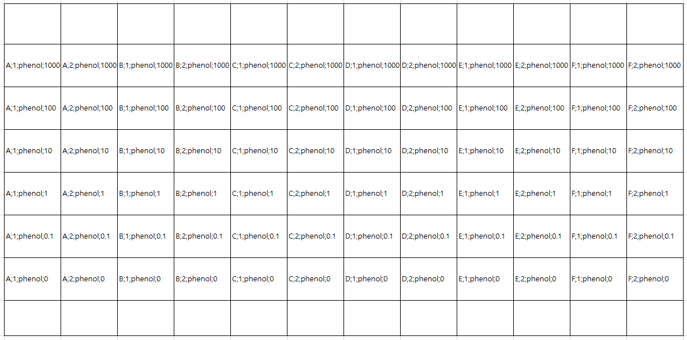
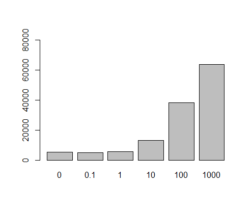

Chapter 5 Multivariate data
5.1 Introduction
앞서 장에서는 기본적인 변수에 대한 대표값들과 두 개 이상의 변수가 주어졌을 경우 그 관계를 정량화 하는 과정을 학습했습니다. 그러나 일반적인 데이터 분석은 두 개 이상의 변수와 샘플들에 대해서 정제, 변환, 가시화, 대표값 비교 및 모델링으로 이어지는 단계로 이루어질 수 있습니다. 본 장에서는 R을 사용해서 위 데이터 분석 과정을 수행하기 위해 필요한 프로그래밍 기술을 습득하기 위해 최근 대표적으로 사용되는 apply 함수들과 dplyr 패키지 사용에 대한 학습을 목표로 합니다.
5.2 Data structures in R
5.2.1 Vectors
같은 타입의 데이터를 (Numeric, character, factor, …) 모아 놓은 컨테이너로서 인덱스는 [, ]를 사용합니다.
5.2.2 Lists
list 변수 타입은 vector 형태의 여러개의 element를 가질 수 있으며 각 element의 데이터는 문자나 숫자 어떤 데이터 타입도 가능하며 각 element vector의 길이가 모두 달라도 됩니다. list의 인덱싱에서 [ ]는 리스트를 반환하고 [[ ]]는 vector element들을 반환합니다.
5.2.3 Matrices
메트릭스는 같은 타입의 데이터로 채워진 사각형 모양을 갖는 컨테이너로 볼 수 있습니다. 인덱스는 [i, j] 형태로 i는 row, j는 column 을 가리킵니다. 메트릭스의 생성은 matrix 명령어를 사용하며 다음과 같이 각 column 별로 값을 채워 나가는 것이 기본 설정이며 byrow=T 를 통해 row를 다 채우고 그 다음 row를 채워 나가게 할 수도 있습니다.
mymat <- matrix(0, nrow=100, ncol=3) # 1
mymat[,1] <- 1:100 # 2
mymat[,2] <- seq(1,200,2) # 3
mymat[,3] <- seq(2,200,2) # 4
m <- matrix(c(1,2,3,4), nrow=2)
m
m <- matrix(c(1,2,3,4), nrow=2, byrow = T)
mrow와 column 이름은 rownames와 colnames로 설정이 가능하며 rbind와 cbind는 벡터를 연결하고 붙이는 역할을 할 수 있으나 데이터가 많거나 반복해서 수행할 경우 컴퓨터의 리소스를 많이 사용하는 문제로 느려질 수 있습니다.
5.2.4 data.frame
data frame은 변수들의 집합으로 list형과 비슷하지만 각 변수 element들이 똑같은 길이를 가지고 matrix 형태로 표현되는 것이 다릅니다. 즉, 각 row는 샘플을 나타내고 각 column은 변수를 나타내며 각 변수들이 갖는 샘플의 개수 (row의 길이, vector 의 길이)는 같아야 합니다. 컬럼 한 줄이 하나의 변수 이므로 새로운 변수도 컬럼 형태로 붙여 넣을 수 있습니다. 변수들의 이름을 이용하여 $ 기호로 각 변수들의 데이터에 접근 할 수 있고 matrix와 같이 [i,j] 형태의 인덱싱도 가능합니다. R 기반의 데이터 분석에서는 가장 선호되는 데이터 타입이라고 볼 수 있습니다.
ids <- 1:10
ids
idnames <- paste("Name", ids, sep="")
idnames
students <- data.frame(ids, idnames)
students
class(students$ids)
class(students$idnames)
students$idnames
str(students)
students <- data.frame(ids, idnames, stringsAsFactors = F)
class(students$idnames)
students$idnames
students[1,]
str(students)
5.3 Working with data frame I
일반적인 데이터 분석은 데이터 클리닝, 변환, 가시화, 대표값비교, 모델링의 반복적인 수행으로 진행될 수 있습니다. 특히 R에서는 data frame 타입의 데이터로 대부분의 분석이 진행되므로 data frame 기반의 다양한 기법을 익혀야 합니다.
# `state.x77` 데이터셋에서 `population`과 `Life Exp`, 그리고 `Murder` 변수만을 이용한 새로운 matrix
str(state.x77)
newstate <- state.x77[,c(1,4,5)]
class(newstate)
str(newstate)# 새로운 변수 추가
rownames(state.x77)
head(state.x77)
state_names <- rownames(state.x77)
newstate <- data.frame(state_names, state.x77[,c(1,4,5)])
head(newstate)
str(newstate)
newstate <- data.frame(state_names, state.x77[,c(1,4,5)], stringsAsFactors = F)
str(newstate)5.3.1 subset and filter
R에서 데이터 저장은 data.frame이나 matrix 타입을 일반적으로 사용합니다. 이 데이터의 일부 열 또는 행의 데이터만을 가져와서 별도로 저장하거나 분석이 필요할 경우가 있습니다. 이 때 인덱싱을 사용해서 일부 데이터를 선택하고 사용할 수 있으며 subset과 filter 함수도 이러한 선별 기능을 제공합니다. subset은 행과 열 모두를 선별할 수 있는 함수이고 filter는 열 (샘플)을 선택하는 함수입니다. 다음 airquality 데이터는 1973년 날짜별로 뉴욕의 공기질을 측정한 데이터 입니다. NA를 제외한 나머지 데이터만으로 새로운 데이터셋을 만들어 봅시다. is.na함수를 사용하면 해당 데이터가 NA일 경우 TRUE, NA가 아닐 경우 FALSE 를 반환해 줍니다.
is.na(airquality$Ozone)
ozone_complete1 <- airquality[!is.na(airquality$Ozone),]
ozone_complete2 <- filter(airquality, !is.na(airquality$Ozone))
ozone_complete3 <- subset(airquality, !is.na(Ozone))위 ozone_complete1와 ozone_complete2, ozone_complete3는 같은 결과를 보입니다. 그러나 ozone_complete1, 2보다는 ozone_complete3 코드가 훨씬 직관적이고 가독성이 높습니다. 특히 airquality$ozone 로 $를 사용하여 변수에 접근한 반면 subset 함수는 Ozone이라는 변수 이름을 사용해서 접근함으로써 코드의 간결성과 가독성을 유지할 수 있습니다. 또한 subset의 select 옵션을 이용해서 변수를 선택할 수도 있으며 &(AND)와 |(OR) 연산자를 사용해서 조건을 두 개 이상 설정할 수 있습니다. 아래 select 옵션에서 -는 해당 변수를 제외한다는 의미 입니다.
5.3.2 merging and split
merge 함수는 두 개 이상의 데이터셋을 통합하는 기능을 수행하는 함수입니다. 특히 rbind나 cbind와는 다르게, 결합하는 두 데이터에 공통적이거나 한 쪽의 데이터를 기준으로 결합을 수행 합니다. ?merge를 참고하면 by, by.x, by.y, all, all.x, all.y 등의 옵션으로 이러한 설정을 수행할 수 있습니다. 간단한 예제를 통해서 이해해 보겠습니다.
10명의 사람이 있고 이 사람들의 나이와 성별을 각각 나타낸 두 데이터셋이 있습니다. 그런데 df1은 나이만을 df2는 성별 정보만을 가지고 있으며 두 정보 모두 제공된 사람은 3명 (인덱스 4,5,6) 뿐입니다. 이제 merge를 이용해서 두 데이터셋을 결합해 보겠습니다.
## merge
df1 <- data.frame(id=c(1,2,3,4,5,6), age=c(30, 41, 33, 56, 20, 17))
df2 <- data.frame(id=c(4,5,6,7,8,9), gender=c("f", "f", "m", "m", "f", "m"))
df_inner <- merge(df1, df2, by="id", all=F)
df_outer <- merge(df1, df2, by="id", all=T)
df_left_outer <- merge(df1, df2, by="id", all.x=T)
df_right_outer <- merge(df1, df2, by="id", all.y=T)만약 두 데이터셋의 id가 다를 경우나 각각 다른 기준으로 결합해야 하는 경우는 by대신 by.x, by.y 옵션을 사용할 수 있습니다.
split 함수는 데이터를 특정 기준으로 나누는 역할을 하며 해당 기준은 factor 형 벡터 형태로 주어질 수 있습니다. 예를 들어 airquality 데이터의 month 변수를 기준으로 데이터를 분리해 보겠습니다.
str(airquality)
g <- factor(airquality$Month)
airq_split <- split(airquality, g)
class(airq_split)
str(airq_split)위와 같이 airq_split은 길이가 5인 (5, 6, 7, 8, 9월) list타입이 되었고 각 요소는 서로 다른 size의 data.frame형으로 구성 된 것을 확인할 수 있습니다.
5.3.3 transforming data
R에서 기존 가지고 있는 데이터의 변경은 새로운 변수의 추가, 삭제, 변형과 샘플의 추가, 삭제, 변형을 생각해 볼 수 있습니다. 이러한 기능은 앞에서 배운 merge, split이나 rbind, cbind, 그리고 인덱싱을 활용한 값 변경 등의 방법을 이용할 수 있습니다. 또한 가장 직관적으로 필요한 변수들을 기존 데이터셋에서 추출한 후 data.frame 명령어를 사용해서 새로운 데이터셋으로 만들어주면 될 것 입니다.
이러한 방법들 외에 within을 사용할 경우 특정 변수의 변형과 이를 반영한 새로운 데이터셋을 어렵지 않게 만들수 있습니다. with 함수의 사용 예와 함께 within 함수를 사용하여 데이터를 변형하는 예를 살펴봅니다. with나 within 함수는 R을 활용하는데 많이 사용되는 함수들은 아닙니다. 또한 이러한 기능들은 dplyr 등의 패키지에서 제공하는 경우가 많아서 필수적으로 익힐 부분은 아닙니다. 그러나 개념적인 이해를 돕기위한 좋은 도구들이며 여전히 고수준의 R 사용자들이 코드에 사용하고 있는 함수들이므로 알아두는 것이 좋습니다.
## without with
ozone_complete <- airquality[!is.na(airquality$Ozone),"Ozone"]
temp_complete <- airquality[!is.na(airquality$Temp),"Temp"]
print(mean(ozone_complete))
print(mean(temp_complete))
## with
with(airquality, {
print(mean(Ozone[!is.na(Ozone)]))
print(mean(Temp[!is.na(Temp)]))
})위 with 함수에서 보는바와 같이 $를 이용한 변수 접근 대신 with함수 내에서는 ({, } 안에서) 해당 data.frame에 있는 변수 이름을 직접 접근할 수 있으며 따라서 코드의 간결함과 가독성이 향상됩니다.
within 함수는 with함수와 같이 {, } 안에서 변수의 이름만으로 해당 변수에 접근이 가능하나 입력된 데이터와 변경된 변수(들)을 반환한다는 점이 다릅니다. 아래 예는 airquality 데이터의 화씨 (Fahrenheit) 온도를 섭씨 (Celsius) 온도로 변환해서 새로운 데이터셋을 만드는 코드입니다. data.frame을 이용한 코드와 비교해 보시기 바랍니다. 데이터셋 내에서 참조할 변수들이 많아질 경우 airquality$xxx 식의 코드를 줄이는 것 만으로도 코드의 가독성과 간결성을 유지할 수 있습니다.
newairquality <- within(airquality, {
celsius = round((5*(Temp-32))/9, 2)
})
head(newairquality)
## data.frame
celsius <- round((5*(airquality$Temp-32))/9, 2)
newairquality <- data.frame(airquality, celsius)
head(newairquality)EXERCISE airquality 데이터의 Month에 따른 Ozone 의 분포를 boxplot을 이용해서 비교하시오. (subset??)을 이용하여 Month에 따른 각각의 Ozone의 값들로 새로운 변수들 v5, v6, v7, v8, v9을 만들고 이들을 하나의 data frame으로 만드시오
## Ozone Solar.R Wind Temp Month Day
## 1 41 190 7.4 67 5 1
## 2 36 118 8.0 72 5 2
## 3 12 149 12.6 74 5 3
## 4 18 313 11.5 62 5 4
## 5 NA NA 14.3 56 5 5
## 6 28 NA 14.9 66 5 6
EXERCISE 가장 직관적으로 먼저 필요한 기능을 하나의 데이터 엘리먼트에 대해서 수행하는 스크립트를 먼저 작성해 보고 필요한 index를 붙이거나 for 문을 활용해서 원하는 형태의 데이터 변환을 완료하시오
oz <- data.frame(airquality$Ozone[airquality$Month==5],
airquality$Ozone[airquality$Month==6],
airquality$Ozone[airquality$Month==7],
airquality$Ozone[airquality$Month==8],
airquality$Ozone[airquality$Month==9])
oz <- list(airquality$Ozone[airquality$Month==5],
airquality$Ozone[airquality$Month==6],
airquality$Ozone[airquality$Month==7],
airquality$Ozone[airquality$Month==8],
airquality$Ozone[airquality$Month==9])
boxplot(oz)
##
soz <- list()
soz[[1]] <- (oz[[1]]-mean(oz[[1]], na.rm=T))/sd(oz[[1]], na.rm=T)
soz[[2]] <- (oz[[2]]-mean(oz[[2]], na.rm=T))/sd(oz[[2]], na.rm=T)
soz[[3]] <- (oz[[3]]-mean(oz[[3]], na.rm=T))/sd(oz[[3]], na.rm=T)
soz[[4]] <- (oz[[4]]-mean(oz[[4]], na.rm=T))/sd(oz[[4]], na.rm=T)
soz[[5]] <- (oz[[5]]-mean(oz[[5]], na.rm=T))/sd(oz[[5]], na.rm=T)
soz
boxplot(soz)
soz <- list()
for(i in 1:5){
soz[[i]] <- (oz[[i]]-mean(oz[[i]], na.rm=T))/sd(oz[[i]], na.rm=T)
}
boxplot(soz)5.4 working with data frame II
앞서 배운 일련의 작업들은 R에서 기본적으로 제공되는 함수를 사용한 경우입니다. 이 외에 R이 갖는 장점인 행렬, 벡터연산 기능을 최대한 활용할 수 있는 기능들에 대한 내용을 배워봅니다. dplyr, reshape2 등의 별도 패키지에대한 설치가 필요합니다.
5.4.1 dplyr - pipe operator
dplyr은 테이블형 데이터를 다루기 위한 도구를 제공하는 매우 편리한 패키지 입니다. %>% 파이프 오퍼레이터를 사용하여 여러 함수를 연속적으로 사용할 수 있으며 R의 장점 중 하나인 apply와 같은 행렬 연산 기능을 subset, split, group 와 같은 행렬 편집 기능과 더하여 만들어낸 도구라고 할 수 있습니다 (홈페이지: https://dplyr.tidyverse.org/)
파이프 오퍼레이터 %>% 의 단축키는 Ctrl + Shift + m 입니다. 이 오퍼레이터는 %>%의 왼쪽 코드의 결과를 출력으로 받아 오른쪽 코드의 입력 (첫번째 파라미터의 값)으로 받아들이는 작동을 합니다. 다음 예에서 보면 sin(pi) 와 같은 함수의 일반적인 사용법 대신 pi %>% sin 처럼 사용해도 똑같은 결과를 보여줍니다. cos(sin(pi))와 같이 여러 합수를 중첩하여 사용할 경우에도 코드 디자인의 가독성이나 효율 측면에서 크게 향상된 방법을 제공해 줍니다.
특히 %>%는 이후 설명할 dplyr의 group_by, split, filter, summary 등의 행렬 편집/연산 함수를 빈번히 다양한 조합으로 쓰게되는 상황에서 더 큰 효과를 발휘할 수 있습니다. 그에 앞서 pipe 오퍼레이터의 예제를 좀 더 살펴보겠습니다.
pipe operator의 왼쪽 구문의 결과가 오른쪽 구문의 입력으로 처리된다고 설명드렸지만 엄밀히 따지면 오른쪽 구문의 첫 번째 파라미터의 입력 값으로 처리되는 것 입니다. 즉, 함수에서 사용되는 파라미터가 여러개일 경우가 있으므로 기본적으로 %>% 의 왼쪽 구문의 출력 값은 오른쪽 구문 (함수)의 첫 번째 인자의 입력값으로 들어가는 것 입니다.

이는 다음 예들을 통해서 명확히 알 수 있습니다. 먼저 paste함수는 그 파라미터로 ,로 구분되는 여러개의 입력 값을 가질 수 있습니다. 따라서 다음 코드는 x가 paste의 첫 번째 파라미터로 들어가게 되어 "1a", "2a", "3a", "4a", "5a" 로 a 앞에 x 값들이 붙어서 출력된 것을 알 수 있습니다.
특정 데이터셋의 컬럼별 평균을 구하고 각 평균의 합을 구할 경우를 생각해 봅시다. R에서는 colMeans라는 특별한 함수를 제공하여 컬럼별로 평균을 계산해 줍니다. 그 후 sum 함수를 사용하여 최종 원하는 값을 얻을 수 있습니다. 이러한 코드를 %>% 오퍼레이터를 사용한 경우의 코드와 비교해 볼 수 있습니다.
x <- data.frame(x=c(1:100), y=c(201:300))
sum(colMeans(x))
x <- data.frame(x=c(1:100), y=c(201:300))
x %>% colMeans %>% sum만약 두 번째 또는 다른 위치의 파라미터에 입력으로 왼쪽 구문의 출력을 받아들이고 싶을 경우는 place holer라는 . 을 사용하면 되겠습니다. round 함수는 두 개의 파라미터를 가지고 digits 값을 pipe operator로 넘겨주고 싶을 경우 아래와 같이 표현할 수 있습니다.
[EXERCISE] 다음 행렬 m의 컬럼별 표준편차를 앞서 만든 mysd 함수와 apply 함수를 사용하여 구하되 %>% 를 사용하시오
5.4.2 dplyr - Important functions
dplyr을 구성하는 중요한 함수는 다음 5가지가 있습니다.
- mutate() - 기존 데이터셋에 새로운 변수 추가
- select() - 주어진 데이터에서 변수 선택
- filter() - 특정 값을 기준으로 샘플 (case) 선택
- summarise() - 대표값 계산
- arrange() - 샘플들의 배열 변환
그리고 위 다섯개의 함수들과 결합해서 자주 사용되는 group_by() 함수가 있습니다. 특히 summarise 함수와 같이 사용될 때 강력한 성능을 발휘합니다. 여러개 함수를 동시에 적용할 때는 %>%를 이용할 수 있으며 summarise 외 5개 함수들은 행렬 편집을 위한 함수들로 보시면 되겠습니다.
예제를 수행하면서 각각의 기능을 살펴보고 그 장점이 무엇인지 파악해 보도록 하겠습니다. 예제에 사용할 데이터는 iris 데이터로 R을 설치하면 기본으로 들어있는 데이터 입니다. 세 종류의 iris 품종에 대한 꽃잎과 꽃받침의 length와 with를 측정해 놓은 데이터 입니다. head와 str 명령어를 이용해서 데이터를 살펴 봅니다. %>%를 배웠으니 써보겠습니다.
filter의 ,로 구분되는 매개변수는 and 로직으로 묶인 조건입니다. R에서 and는 &, or는 |, 그리고 not은 ! 으로 사용하면 되겠습니다.

Image from (https://r4ds.had.co.nz/)
head(iris)
filter(iris, Species=="setosa", Species=="versicolor")
filter(iris, Species=="setosa" & Species=="versicolor")
filter(iris, Species=="setosa" | Species=="versicolor") %>% dimarrange()는 샘플들의 배열 순서 즉, row의 순서를 바꾸는 기능을 수행합니다.
select() 는 주어진 데이터셋으로부터 관심있는 변수를 선택하여 보여줍니다. 다음 helper 함수들은 select 함수와 같이 유용하게 쓰일 수 있습니다.
- starts_with(“abc”) - “abc” 로 시작하는 문자열을 갖는 변수 이름
- ends_with(“xyz”) - “xyz”으로 끝나는 문자열을 갖는 변수 이름
- contains(“ijk”) - “ijk” 문자열을 포함하는 변수 이름
- matches(“(.)\1”) - 정규식, 반복되는 문자
head(iris)
select(iris, Species, everything())
select(iris, starts_with('S'))
select(iris, obs = starts_with('S'))
iris2 <- rename(iris, aavar = Petal.Length)
select(iris2, matches("(.)\\1"))
tmp <-iris[,3:5]
colnames(iris)[grep("^S", colnames(iris))]
iris[,grep("^S", colnames(iris))]
tmpmutate() 함수는 새로운 변수를 추가할 수 있는 기능을 제공합니다. within()과 비슷하다고 볼 수 있습니다.
summarise()는 data.frame내 특정 변수의 값들로 하나의 요약값/대푯값을 만들어 줍니다. summarise 함수는 단독으로 쓰이기 보다는 group_by() 기능과 병행해서 쓰이는 경우에 유용하게 쓰입니다. summarise_all() 함수를 사용하면 모든 변수에 대해서 지정된 함수를 실행합니다.
summarise(iris, mean(Sepal.Length), m=mean(Sepal.Width))
by_species <- group_by(iris, Species)
summarise(by_species, mean(Sepal.Width))
summarise_all(by_species, mean)
summarise_all(by_species, sd)위와 같은 dplyr 함수들은 %>%와 같이 사용되어 다중 오퍼레이션을 구현하면 더욱 강력한 효과를 발휘할 수 있습니다. 위에서 구한 품종별 꽃잎과 꽃받침의 평균 길이는 다음과 같이 구현할 수 있습니다.
여러 합수를 중접하여 한 줄로 코딩할 수 있지만 가독성이 떨어지므로 중첩해서 함수를 사용하는 습관은 어떤 프로그래밍 언어에서도 권장하지 않습니다.
iris %>% head(10)
iris$Species
iris_split <- split(iris, iris$Species)
iris_split %>% lapply(dim)
iris_split %>% lapply(class)
colMeans(iris_split[[1]][,-5])
x <- iris_split[[1]]
class(x)
head(x)
colMeans(x)
colMeans(x[,-5])
apply(x[,-5], 2, mean)
iris_means <- lapply(iris_split, function(x){colMeans(x[,1:4])})
iris_means
irisdat <- rbind(iris_means[[1]], iris_means[[2]], iris_means[[3]])
rownames(irisdat) <-names(iris_means)
irisdat
irisdat <- do.call(rbind, iris_means)
iris_means_df <- data.frame(iris_means)
iris_means_df
barplot(irisdat, beside = T, legend.text = rownames(irisdat))dplyr의 전신이라 할 수 있는 plyr 패키지는 다음과 같이 설명이 되어 있습니다. A set of tools for a common set of problems: you need to split up a big data structure into homogeneous pieces, apply a function to each piece and then combine all the results back together. 즉 split-apply-combine 세 가지 동작을 쉽게 할 수 있도록 만들어 놓은 툴 입니다. R이 다른 언어에 비해 데이터 분석에서 주목을 받는 이유로 split, apply 등의 행렬 연산 함수가 발달한 것을 내세우는데 dplyr은 이들보다 더 편리하게 데이터 조작을 할 수 있도록 만들어 놓은 것 입니다.
[EXERCISE] babies 데이터셋에서 산모의 흡연 여부를 기준으로 아이와, 아이의 엄마, 아빠의 몸무게 데이터에 대한 평균을 구하고 barplot으로 비교하는 분석 실습을 진행하겠습니다. 이 과정에서 split, apply, combine을 활용하여 평균을 구하는 코드와 dplyr 패키지를 사용하여 만든 코드를 비교해 보도록 하겠습니다. 대략적인 분석 프로세스는 다음과 같습니다.
- 필요 데이터셋 준비 - subset
- 데이터 클리닝, 변환 - within
- 그룹별 데이터 분리 - split
- 대표값 계산 - lapply, apply
- 계산값 통합 - rbind
- 그래프 비교 - barplot
head(babies)
mydat <- subset(babies, select = c(wt, wt1, dwt, smoke))
mydat <- within(mydat, {
wt[wt == 999] <- NA
wt1[wt1 == 999] <- NA
dwt[dwt == 999] <- NA
})
mydat <- within(mydat, {
smoke = factor(smoke)
levels(smoke) = list(
"never" = 0,
"smoke now" = 1,
"until current pregnancy" = 2,
"once did, not now" = 3)
})
mydat %>% str
by_smoke <- split(mydat, mydat$smoke)
by_smoke %>% lapply(dim)
apply(by_smoke[[1]][,-4], 2, mean, na.rm=T)
mysummary <- function(x){
apply(x[,-4], 2, mean, na.rm=T)
}
mysummary(by_smoke[[1]])
by_smoke_mean <- lapply(by_smoke, mysummary)
## for
wt_mean <- do.call(rbind, by_smoke_mean)
wt_mean
barplot(wt_mean, beside=T, legend.text = rownames(wt_mean), ylim=c(0,200))
#legend(x=1, y=150, legend = rownames(wt_mean))split은 factor형 변수를 기준으로 데이터를 나누어 주는 역할을 하며 lapply는 list 형 데이터를 각 리스트의 각각의 원소들에 대해서 function(x) 를 수행하는 역할을 합니다. 마지막 rbind를 이용해서 list를 data.frame으로 통합하며 이 때 do.call 함수를 사용할 수도 있습니다. 이제 dplyr 패키지를 이용하여 동일한 기능을 수행해 봅니다.
babies %>% str
tmp <- babies %>%
select(c(wt, wt1, dwt, smoke)) %>%
filter(wt!=999, wt1!=999, dwt!=999) %>%
mutate(smoke=factor(smoke)) %>%
group_by(smoke) %>%
summarise_all(mean)
tmp위에서 보듯 dplyr 패키지를 사용할 경우 그 결과는 같으나 코드의 가독성과 효율성면에서 장점을 보여줍니다. 여기서 group_by, summarise_all 함수 등의 자세한 사용법은 help 페이지를 참고해 주세요. 참고로 barplot은 numeric matrix 형태의 입력만을 받으므로 이에 맞도록 데이터를 다시 변형해야 합니다. 후에 배울 ggplot 을 이용하면 이러한 불편함이 없이 data.frame 형 데이터셋도 쉽게 가시화 할 수 있습니다.
5.4.3 apply
데이터를 다룰 때 각 원소별, 그룹별, row, column 별로 다뤄야 할 경우가 많으며 apply 계열의 합수는 이러한 기능을 제공하는 함수로써 적절히 사용하면 효율성이나 편리성 뿐만 아니라 코드의 간결성 등 장점이 많은 기능입니다. colMean 과 같은 함수는 column 또는 row 단위로 해당하는 모든 값들에 대해 연산을 수행해주는 함수로 colMean은 평균을 계산하는 함수이고 일반적으로는 다음과 같이 apply 함수와 mean 함수를 이용해서 같은 기능을 수행할 수 있습니다. 아래는 앞서 babies 데이터셋 clearning 된 b2 데이터에 이어서 수행되는 내용입니다.
library(UsingR)
b <- within(babies, {
gestation[gestation==999] <- NA
wt[wt == 999] <- NA
})
b2 <- within(b, {
smoke = factor(smoke)
levels(smoke) = list(
"never" = 0,
"smoke now" = 1,
"until current pregnancy" = 2,
"once did, not now" = 3)
})
b3 <- b2[,c("gestation", "wt", "dwt")]
colMeans(b3)
colMeans(b3, na.rm=T)
b4 <- within(b3, dwt[dwt==999]<-NA)apply는 다음과 같이 작동을 합니다.

apply(b4, 1, mean)
apply(b4, 2, mean)
apply(b4, 2, mean, na.rm=T)
apply(b4, 2, sd)
apply(b4, 2, sd, na.rm=T)
apply(b4, 2, function(x){
xmean <- mean(x, na.rm=T)
return(xmean)
})임의의 함수를 만들어서 사용할 수도 있습니다. apply 함수를 사용할 경우 행렬이 커질수록 계산 시간도 빨라질 수 있습니다.
n <- 40
m <- matrix(sample(1:100, n, replace=T), ncol=4)
m
mysd <- function(x){
xmean <- sum(x)/length(x)
tmpdif <- x-xmean
xvar <- sum(tmpdif^2)/(length(x)-1)
xsd <- sqrt(xvar)
return(xsd)
}
mysd(m[1,])
apply(m, 1, mysd)
apply(m, 1, sd)[EXERCISE] for 문과 mysd를 이용하여 위 행렬 m의 4개 컬럼에 대한 stadard deviation을 구하시오
5.4.4 map and apply function family
apply 함수 외에도 sapply, lapply, mapply 등의 다양한 apply계열 함수가 쓰입니다.
# map
collection <- c(4, 9, 16)
Map(sqrt, collection)
sqrt(collection)
sapply(collection, sqrt)
#
lst <- with(ToothGrowth, split(len, supp))
sapply(lst, mean)
sapply(lst, median)
Map(median, lst)
median(lst)
mean(lst)
# mapply
Map(min, c(1,4), c(2,3))
#simplification of output
mapply(min, c(1,4), c(2,3)) sapply는 lapply와 유사하며 벡터, 리스트, 데이터프레임 등에 함수를 적용하고 그 결과를 벡터 또는 행렬로 반환합니다.
x <- c(1:10)
sapply(x, function(x){2*x})
x*2
x <- list(a=1:10, b=exp(-3:3), logic=c(T,T,F,T))
sapply(x, quantile)
quantile(x$a)
x <- data.frame(a=1:7, b=exp(-3:3), logic=c(T,T,F,T,T,T,F))
sapply(x, class)
x반복적으로 수행하는 일들은 apply 계열 함수를 사용하면 쉽게 기능을 수행할 수 있습니다.